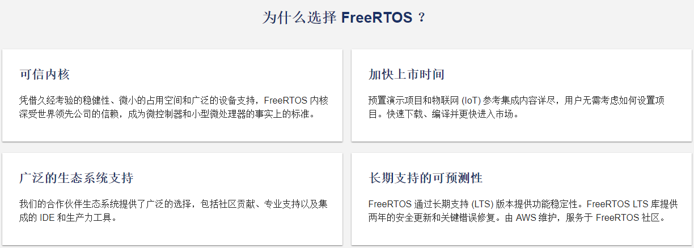

<!DOCTYPE lake>
<h2 data-lake-id="MvHJ4" id="MvHJ4"><span data-lake-id="u5cff998b" id="u5cff998b">RTOS</span></h2><p data-lake-id="u3a988556" id="u3a988556"><span data-lake-id="ue14ee7fc" id="ue14ee7fc">RTOS是Real Time Operation System实时操作系统的简称。</span></p><p data-lake-id="u82b5eb80" id="u82b5eb80"><strong><span data-lake-id="u2e188673" id="u2e188673">国内常见RTOS：</span></strong></p><p data-lake-id="u97127d31" id="u97127d31"><span data-lake-id="u8f840629" id="u8f840629">RT-Thread（国货之光）、Huawei LiteOS、AliOS-Things</span></p><p data-lake-id="ua8ff00c2" id="ua8ff00c2"><strong><span data-lake-id="u3a59bca0" id="u3a59bca0">国外常见RTOS：</span></strong></p><p data-lake-id="uf4ab95d5" id="uf4ab95d5"><span data-lake-id="u0d506677" id="u0d506677">FreeRTOS、μC/OS、RTX（Arm出品）、VxWorks（付费），Zephyr</span></p><h2 data-lake-id="XcUSY" id="XcUSY"><span data-lake-id="ubbcb9db1" id="ubbcb9db1">什么是FreeRTOS</span></h2><p data-lake-id="u7c57c873" id="u7c57c873"><a data-lake-id="ua8a5b424" href="https://freertos.org" id="ua8a5b424" rel="noopener noreferrer" target="_blank"><span data-lake-id="u53149e5a" id="u53149e5a">FreeRTOS官网地址</span></a></p><p data-lake-id="u4e03fc0e" id="u4e03fc0e"><span data-lake-id="ud1461e18" id="ud1461e18">FreeRTOS 是市场领先的面向微控制器和小型微处理器的实时操作系统 (RTOS)，与世界领先的芯片公司合作开发，现在每 170 秒下载一次。MIT 通过 FreeRTOS 开源许可免费分发，包括一个内核和一组不断丰富的 IoT 库，适用于所有行业领域。FreeRTOS 的构建突出可靠性和易用性。</span></p><p data-lake-id="u5e93f1c4" id="u5e93f1c4"><span data-lake-id="u2b1d8d8c" id="u2b1d8d8c">​</span><br/></p><p data-lake-id="uc1fffee5" id="uc1fffee5"><span data-lake-id="ua4313718" id="ua4313718">FreeRTOS是一个开源的实时操作系统（RTOS），专门用于嵌入式系统。它提供了一个轻量级、可移植、可扩展的内核，用于处理任务调度、内存管理、中断处理和通信等操作。FreeRTOS广泛应用于各种嵌入式设备和应用程序，包括微控制器、传感器、无线模块、医疗设备、工业自动化和物联网（IoT）设备等。</span></p><p data-lake-id="uc485e533" id="uc485e533"><span data-lake-id="u9b104928" id="u9b104928">​</span><br/></p><p data-lake-id="ucee20cfe" id="ucee20cfe"><span data-lake-id="u9eaffd30" id="u9eaffd30">以下是一些关键特点和功能：</span></p><ol list="u0ed4b425"><li data-lake-id="u8cd971b8" fid="uf681cb7b" id="u8cd971b8"><span data-lake-id="u24baf2f5" id="u24baf2f5">轻量级和可嵌入：FreeRTOS内核非常小巧，占用的内存资源较少，适合嵌入到具有有限资源的设备中。</span></li><li data-lake-id="uaf206d5c" fid="uf681cb7b" id="uaf206d5c"><strong><span data-lake-id="u1e150fad" id="u1e150fad">任务调度</span></strong><span data-lake-id="uc49f7014" id="uc49f7014">：FreeRTOS使用基于优先级的抢占式调度算法，可以管理多个任务，并根据任务的优先级分配处理器时间。</span></li><li data-lake-id="u9918a9c3" fid="uf681cb7b" id="u9918a9c3"><strong><span data-lake-id="u68691045" id="u68691045">事件和信号量</span></strong><span data-lake-id="uc6f8b288" id="uc6f8b288">：FreeRTOS提供了事件和信号量机制，用于任务之间的同步和通信。任务可以等待特定事件发生或获取共享资源的访问权限。</span></li><li data-lake-id="ue9c94e03" fid="uf681cb7b" id="ue9c94e03"><span data-lake-id="u33399da3" id="u33399da3">内存管理：FreeRTOS具有灵活的内存管理功能，可以根据应用程序的需求进行内存分配和释放。它支持动态内存分配和静态内存池。</span></li><li data-lake-id="uf0b33545" fid="uf681cb7b" id="uf0b33545"><span data-lake-id="ud8c439a9" id="ud8c439a9">定时器：FreeRTOS提供了软件定时器功能，可以在特定时间间隔触发任务或事件。</span></li><li data-lake-id="u7cf946b7" fid="uf681cb7b" id="u7cf946b7"><span data-lake-id="u1958d72b" id="u1958d72b">中断处理：FreeRTOS具有可配置的中断处理机制，可以优雅地处理中断事件，并与任务进行无缝的交互。</span></li><li data-lake-id="ue8381fda" fid="uf681cb7b" id="ue8381fda"><span data-lake-id="u80ce32ef" id="u80ce32ef">可移植性：FreeRTOS的内核代码是高度可移植的，可以在多种处理器架构和编译器上运行。它还提供了许多平台和设备的移植层，简化了在不同硬件平台上的使用。</span></li><li data-lake-id="u0f84d2ee" fid="uf681cb7b" id="u0f84d2ee"><span data-lake-id="ue4584943" id="ue4584943">社区支持：FreeRTOS拥有一个活跃的开源社区，提供文档、示例代码、论坛和支持，使开发人员能够更轻松地使用和定制FreeRTOS。</span></li></ol><p data-lake-id="u107fa867" id="u107fa867"><span data-lake-id="u4044d3a7" id="u4044d3a7">总之，FreeRTOS是一个功能强大、可靠性高、易于使用的实时操作系统，适用于嵌入式系统的开发。它具有广泛的应用领域，并在工业界得到广泛采用。</span></p><p data-lake-id="ud11c8742" id="ud11c8742"><span data-lake-id="u49a3e9e7" id="u49a3e9e7">​</span><br/></p><h2 data-lake-id="g8d8P" id="g8d8P"><span data-lake-id="u98b5a991" id="u98b5a991">为什么选择FreeRTOS</span></h2><p data-lake-id="u3ff89e48" id="u3ff89e48"><a data-lake-id="uf8410f3a" href="https://sourceforge.net/software/real-time-operating-systems-rtos/?sort=featured" id="uf8410f3a" rel="noopener noreferrer" target="_blank"><span data-lake-id="uc0fe80cb" id="uc0fe80cb">RTOS下载排行</span></a></p><p data-lake-id="uabffea3d" id="uabffea3d"><span data-lake-id="u1a83257e" id="u1a83257e">选择FreeRTOS作为实时操作系统（RTOS）的原因包括以下几点：</span></p><ol list="u569be7d1"><li data-lake-id="u76a17ec3" fid="ubf8918e6" id="u76a17ec3"><span data-lake-id="uf97584d1" id="uf97584d1">轻量级和资源占用低：FreeRTOS的内核非常小巧，占用的资源较少。这使得它非常适合嵌入式系统和有限资源的设备，如微控制器。</span></li><li data-lake-id="u16d21771" fid="ubf8918e6" id="u16d21771"><span data-lake-id="u18f3c1f7" id="u18f3c1f7">可移植性高：FreeRTOS具有高度可移植性，可以在多种处理器架构和编译器上运行。它还提供了许多平台和设备的移植层，简化了在不同硬件平台上的使用。</span></li><li data-lake-id="u092827a9" fid="ubf8918e6" id="u092827a9"><span data-lake-id="ua301ac7a" id="ua301ac7a">社区支持活跃：FreeRTOS拥有一个活跃的开源社区，提供大量的文档、示例代码、论坛和支持。这使得开发人员可以更轻松地学习、使用和定制FreeRTOS。</span></li><li data-lake-id="u123dbaf4" fid="ubf8918e6" id="u123dbaf4"><span data-lake-id="ua81b78f3" id="ua81b78f3">基本功能齐全：FreeRTOS提供了基本的任务调度、通信和同步机制，包括基于优先级的抢占式调度、事件、信号量等。它能够满足大多数嵌入式应用的实时需求。</span></li><li data-lake-id="u69c7c5d5" fid="ubf8918e6" id="u69c7c5d5"><span data-lake-id="ua79de2c1" id="ua79de2c1">可靠性高：FreeRTOS经过广泛的使用和测试，具有良好的稳定性和可靠性。它已被应用于各种嵌入式设备和应用领域，并且具有较长的发展历史。</span></li><li data-lake-id="u50622b81" fid="ubf8918e6" id="u50622b81"><span data-lake-id="u436e25e5" id="u436e25e5">可定制性：FreeRTOS提供了一定程度的可定制性，允许开发人员根据应用的特定需求进行定制和配置。这使得FreeRTOS能够灵活适应各种应用场景。</span></li></ol><p data-lake-id="u1940e959" id="u1940e959"><span data-lake-id="u60fc38a7" id="u60fc38a7">综上所述，选择FreeRTOS作为RTOS的理由包括其轻量级、可移植性高、活跃的社区支持、基本功能齐全、可靠性高以及可定制性等特点。它是一个广泛采用和可靠的实时操作系统，适用于各种嵌入式系统开发。</span></p><p data-lake-id="u6a454c65" id="u6a454c65"></p><p data-lake-id="u4a38450e" id="u4a38450e"><br/></p><p data-lake-id="u5f337974" id="u5f337974"><br/></p><p data-lake-id="ubf77cf2a" id="ubf77cf2a"><br/></p><p data-lake-id="u855831a2" id="u855831a2"><span data-lake-id="ufdce8697" id="ufdce8697">​</span><br/></p><p data-lake-id="uc81a9eb3" id="uc81a9eb3"><span data-lake-id="u9e3d8212" id="u9e3d8212">​</span><br/></p><p data-lake-id="ua79ddfa2" id="ua79ddfa2"><span data-lake-id="ufd515125" id="ufd515125">​</span><br/></p><p data-lake-id="u4acbaf8b" id="u4acbaf8b"><span data-lake-id="ub9bdee24" id="ub9bdee24">​</span><br/></p><p data-lake-id="u7913de61" id="u7913de61"><span data-lake-id="u66c5bef9" id="u66c5bef9">​</span><br/></p>